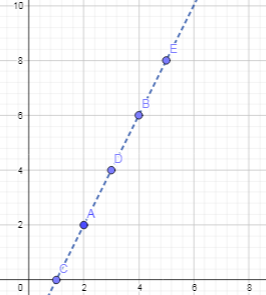
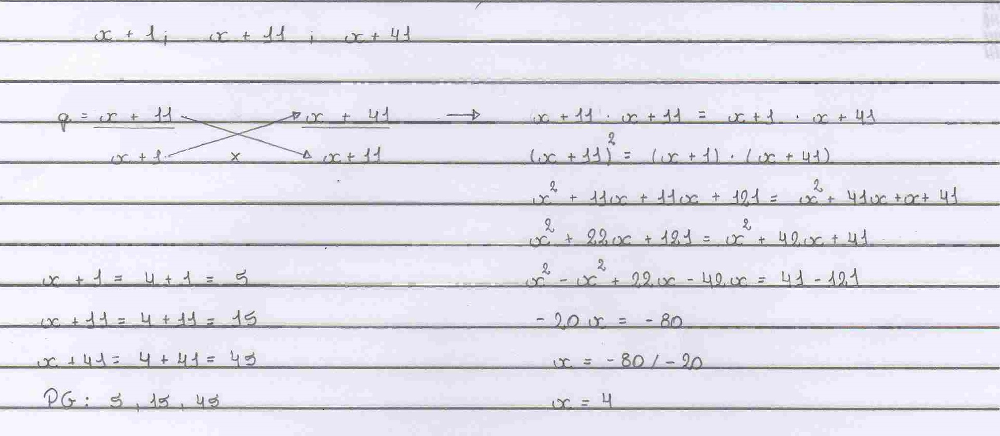

Uma progressão aritmética é uma sequência de números em que, a partir do segundo elemento, é a soma do anterior com uma constante r, que é a diferença entre um número e seu anterior.
Exemplo de uma PA: (0, 3, 6, 9, 12...)
a1 = 0
r = 9 - 6 = 3
Para encontrar o termo geral existe um fórmula específica: an = a1 + (n - 1)r
Exemplo 2: Encontrar o 15º termo da PA (0, 3, 6, 9, 12...)
a15 = 0 + (15 - 1)* 3
a15 = 14 * 3
a15 = 42
O 15º termo da PA é o 42
Uma PA também pode estabelecer relação com as função afim, tornando possível a construção de um gráfico, o qual apresenta uma reta com crescimento linear, já que o crescimento é em função de uma razão r que é sempre a mesma. Cada ponto do gráfico pode ser estabelecido por (n , an), ou seja, o valor do x é a posição dos termos dentro da PA, e o y é o valor dos termos.
Uma divergência entre o gráfico de uma função afim e o gráfico de uma PA é que o gráfico da PA NÂO pode ser representado por uma linha, que engloba todos os valores entre um ponto e outro. Para o gráfico da PA são usadas linhas tracejadas, indicando que somente o valor do ponto é válido.
Exemplo 3: Gráfico da PA (0, 2, 4, 6, 8...)
Também é possível somar todos os termos de uma PA finita sem a necessidade de somar um por um. Para isso é usada a fórmula: Sn = ((a1 + an)*n)/2, em que:
Exemplo 4: Somar os 20 primeiros elementos da PA (0, 3, 6, 9, 12...)
Como não temos o elemento da posição 20 precisamos primeiro descobri-lo para poder calcular a soma. Para descobrir esse valor usa-se a fórmula an = a1 + ( n - 1 )r.
a20 = 0 + (20 - 1)*3
a20 = 19 * 3
a20 = 57
Cálculo da soma:
Sn = ((0 + 57)*20)/2
Sn = (1140)/2
Sn = 570
Resolução de questão do trabalho
Questão 2: Interpole 5 meios aritméticos entre 10 e 220:
Interpolar meios aritméticos entre dois valores significa inserir k valores entre os dois extremos, ou seja, n = k + 2 termos.
Para fazer a interploação são usadas as fórmulas n = k + 2 e an = a1 + (n - 1)*r
Resolução:
n = k + 2
n = 5 + 2
n = 7
an = a1 + (n - 1)5
220 = 10 + (7 - 1)r
220 = 10 + 6r
220 - 10 = 6r
210 = 6r
r = 210 / 6
r = 35
Agora com o termo inicial, final e a razão entre cada um dos termos é possível montar a PA com os cinco meios aritméticos.
PA: 10, 45, 80, 115, 150, 185, 220
A Progressão Geométrica segue o mesmo princípio da Progressão Arimética, porém, ao invés de ser dada pela soma de um elemento a uma constante r, a PG é dada pelo produto do elemento anterior a uma constante q.
Exemplo de uma PG: (2, 6, 18, 54, 162...)
a1 = 2
q = 3
Para encontrar o termo geral de uma PG usa-se a fórmula an = a1 * q ^ n-1
Exemplo 2: Encontrar o 10º termo da PG (2, 6, 18, 54, 162...)
a10 = 2 * 3 ^ 10-1
a10 = 2 * 3 ^ 9
a10 = 2 * 19.683
a10 = 39.366
O décimo termo da PG é 39.366
Assim como em uma PA, em uma PG é possível fazer a interpolação geométrica, calcular todos os termos de uma PG finita, e também calcular todos os termos de uma PG infinita quando -1< q< 1.
Resolução de questão do trabalho:
Questão 3: Determine o valor de x de modo que os números 𝑥 + 1, 𝑥 + 11 e 𝑥 + 41 formem, nessa ordem, uma PG.
Resolução:
Reflexão sobre o conteúdo
As progressões aritméticas e progressões geométricas são um conteúdo que gostei de trabalhar e tive bastante facilidade. Na matéria de algoritmos e lógica de programação já tivemos de fazer algoritmos que calculassem PAs e PGs, e, nessa época tive bastante dificuldade porque eu não entendia o que eram nem como se calculava, para mim, pareciam confusas e difíceis. No entanto, agora percebo que são, na verdade, muito simples e nem um pouco confusas. Por conta da relevância que esse estudo teve para mim, da dificuldade que tive para compreender quando fui fazer o algoritmo e agora minha compreensão e facilidade, resolvi adicionar esse material ao portfólio.
Uma Progressão aritmética é um tipo de sequência em que, cada valor, a partir do primeiro, é resultado da soma do anterior a uma constante r. Com apenas dois valores é possível descobrir qual é a constante r e, com isso, é possível fazer várias outras coisas como interpolar valores, descobrir qual o valor da PA para determinado índice, e até mesmo a soma de determinados valores sem precisar descobrir cada um e calculá-los um por um, por meio de várias fórmulas diferentes que, se entender o conceito e como se chega à fórmula, não precisam ser decoradas. As progressões geométricas são muito parecidas com as progressões aritméticas, porém, para descobrir um valor,(é preciso multiplicar, e não somar como é feito na PA), o valor anterior por uma constante q. Assim coma a PA, a PG possi várias fórmulas associadas a ela que permitem descobrir diversas informações.
Na realização do Trabalho cometi um pequeno erro, porém por falta de atenção ao sinal. Compreendi este erro e o corrigi. Assim como nos outros conteúdos, acho que tive um bom aproveitamento da matéria, que me dediquei a estudar.